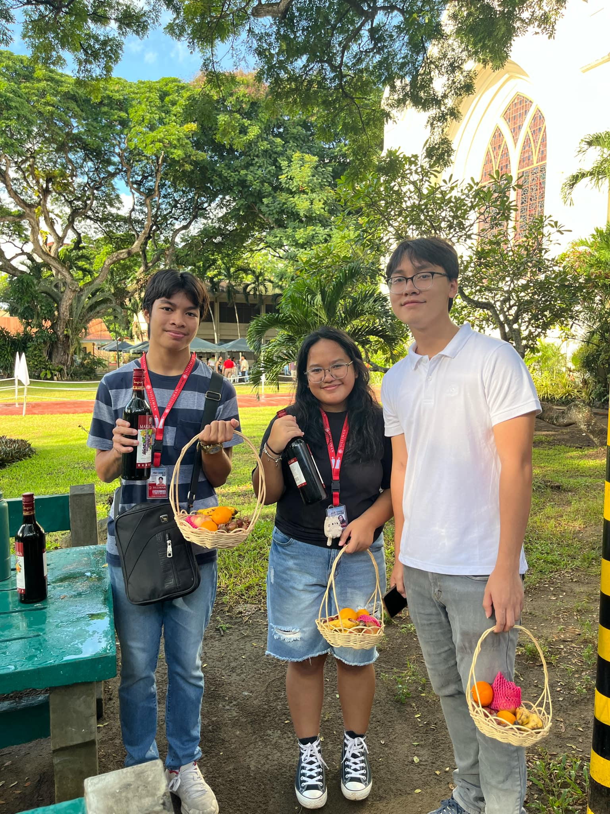
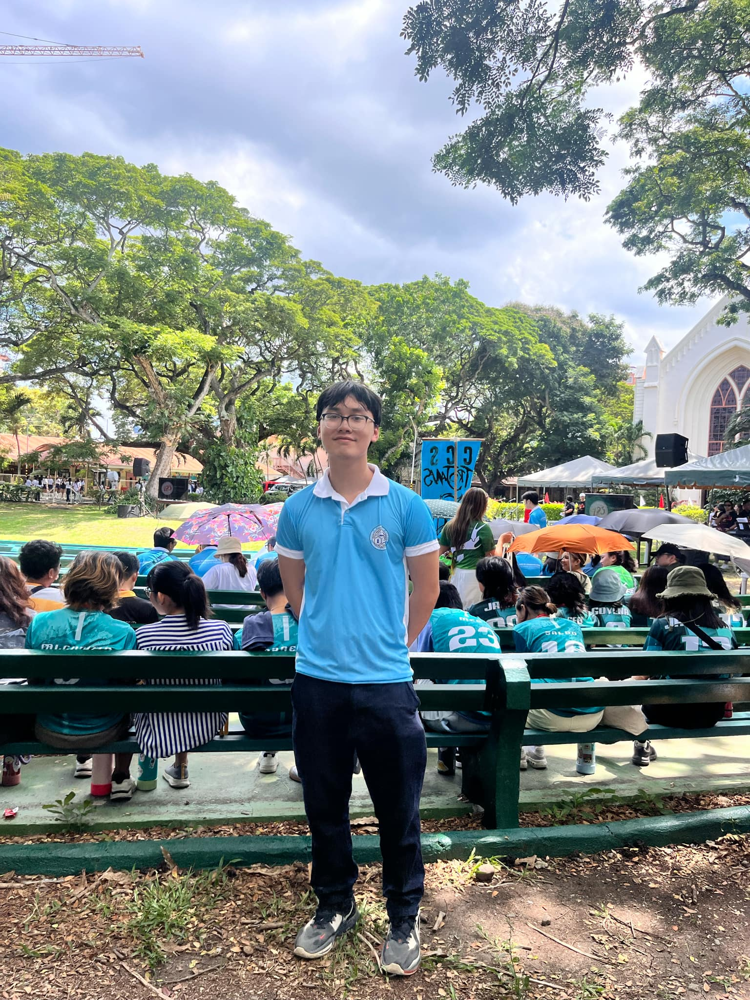
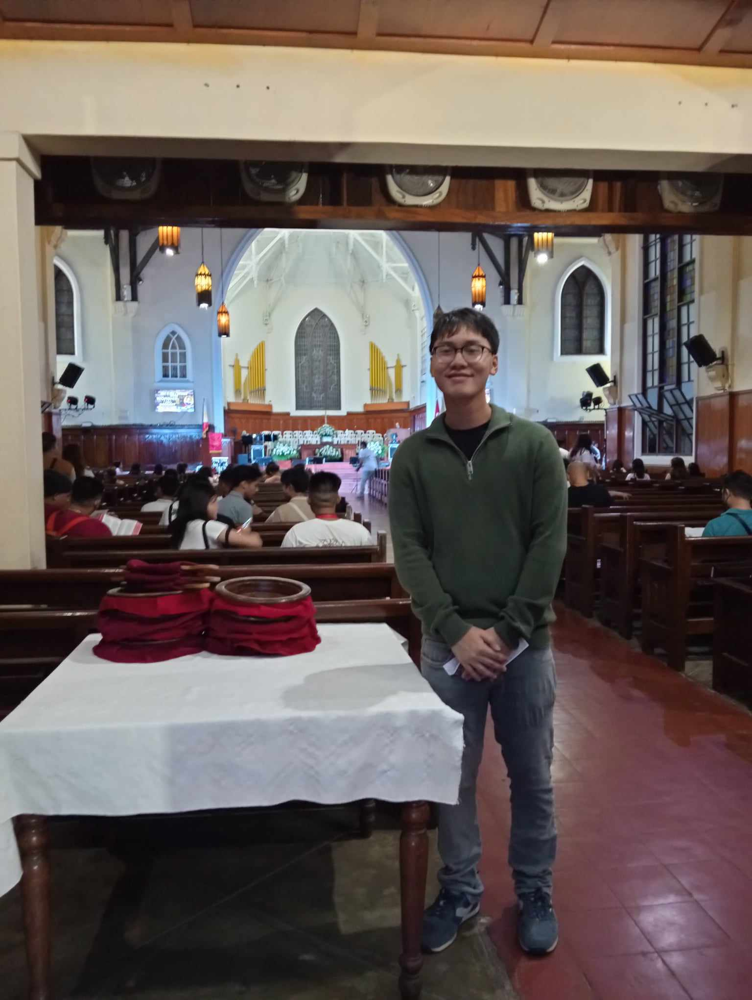
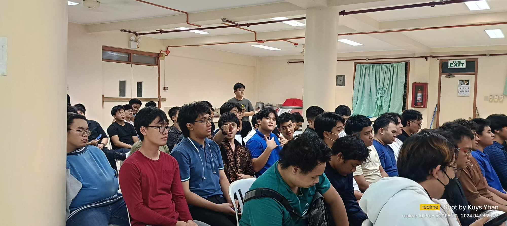
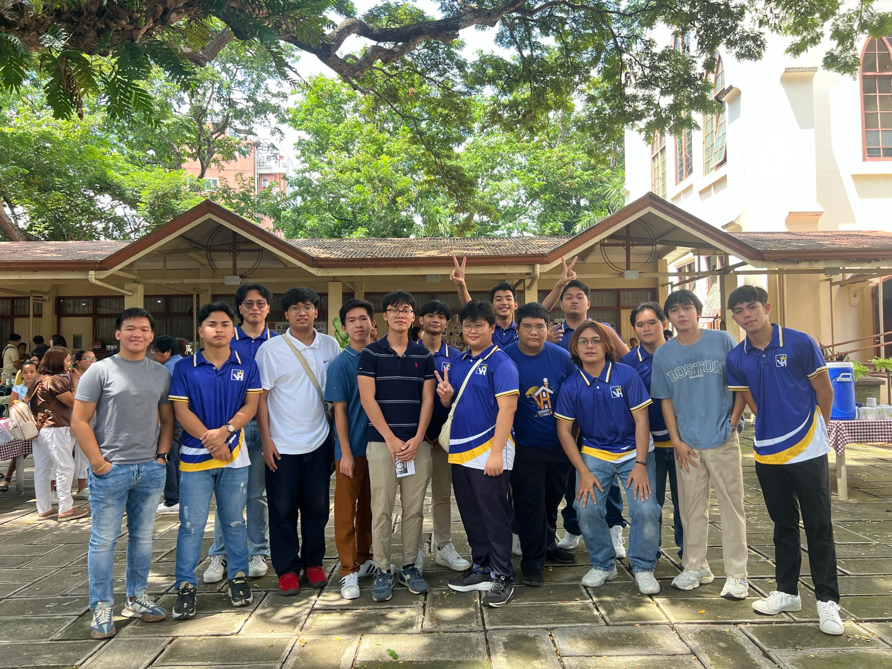

CCS Opening Devotion
The CCS Opening Devotion held at the Silliman University Church

Parada Opening Devotion
The Opening Devotion for Parada Sillimaniana held on August 26, 2024 at the amphitheatre

J2MAD Concert
The Worship Concert by J2MAD held at the Silliman University Church

Vernon Dorm Devotion
Vernon Hall Dorm Devotion held at the Pulido Hall on August 26, 2024

Sunday Worship, Installation of Dorm Officers
Sunday worship at Silliman University Church with Vernon Hall